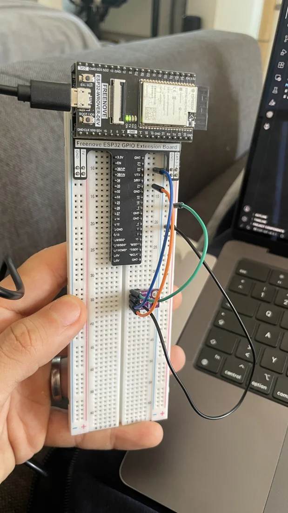
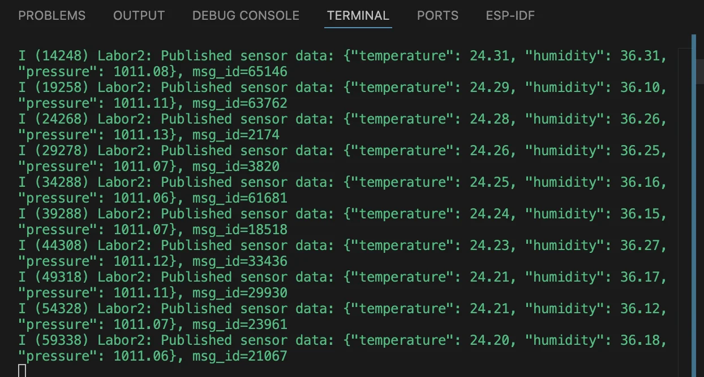

ESP32: Umweltdaten per MQTT übertragen
Kleines Gerät. Echter Sensor. Vernetzte Daten.

IOT / VOM SENSOR INS NETZWERKDie Herausforderung
Umweltdaten werden erst dann nutzbar, wenn ein Embedded-Gerät sie zuverlässig erfasst, strukturiert und an andere Systeme übertragen kann.
Der Ansatz
Wir verbanden den BME280 über I²C und nutzten ESP-IDF für die Messwerterfassung, WLAN-Verbindung und MQTT-Übertragung. Der öffentlich bereitgestellte Quellcode wurde gegenüber dem ursprünglichen Versuch angepasst: Fest einprogrammierte Zugangsdaten wurden entfernt und die Fehlerbehandlung verbessert.
- Sensorerkennung und Kommunikation über I²C
- Erfassung von Temperatur, Luftfeuchtigkeit und Luftdruck
- FreeRTOS Event Groups und Verwaltung des WLAN-Verbindungszustands
- JSON-Telemetrie über MQTT mit dokumentiertem Validierungsumfang
Das Ergebnis
Die ursprünglichen Laboraufzeichnungen zeigen die Erkennung des Geräts an Adresse 0x76, laufende Messwerte und MQTT-Veröffentlichungsanfragen. Die sicherheitsüberarbeitete öffentliche Version wurde weder unabhängig kompiliert noch erneut auf der ursprünglichen Hardware getestet.
Ein vollständiger Laborablauf: BME280 → ESP32 → WLAN → MQTT.
Einblicke in das Projekt

Die ursprünglichen Labortests waren erfolgreich. Der veröffentlichte, um Zugangsdaten bereinigte Code wurde jedoch nicht erneut mit ESP-IDF gebaut oder validiert.